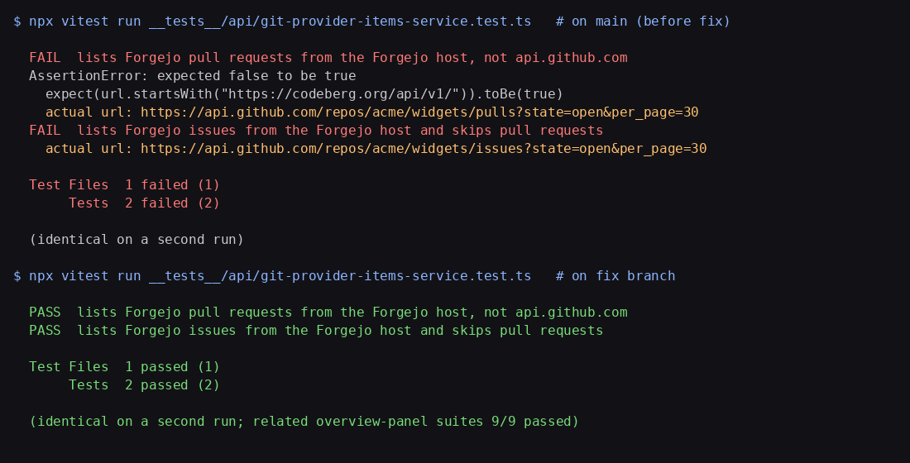

Terminal runs of __tests__/api/git-provider-items-service.test.ts: failing twice on main (requests go to api.github.com), passing twice with the fix (requests go to codeberg.org/api/v1).
__tests__/api/git-provider-items-service.test.ts
